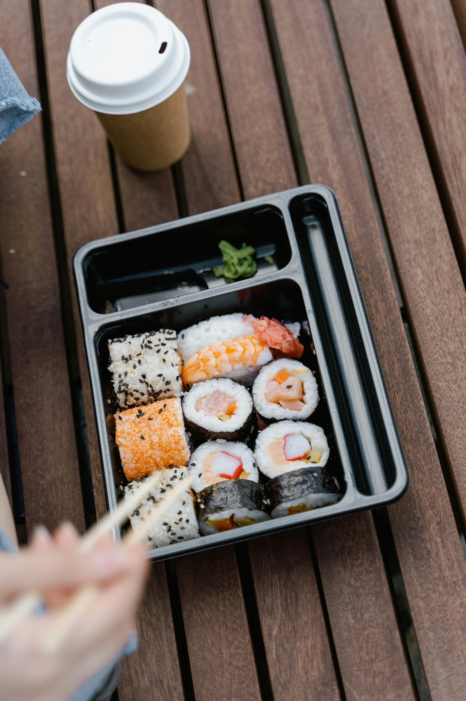

Sushi Instructions
Back to About Page

Description:
This recipe will guide you through every step on how to create a california sushi roll from start to finish.
Ingredients
- 1 ⅓ cups water
- ⅔ cup uncooked short-grain white rice
- 3 tablespoons rice vinegar
- 3 tablespoons white sugar
- 1 ½ teaspoons salt
- 4 sheets nori seaweed sheets
- ½ pound imitation crabmeat, flaked
- 1 avocado - peeled, pitted, and sliced
- ½ cucumber, peeled, cut into small strips
- 2 tablespoons pickled ginger